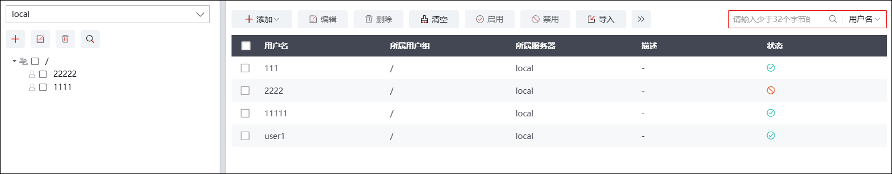
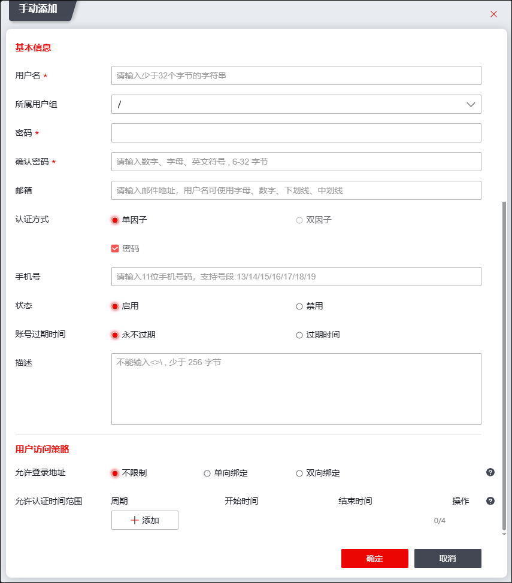
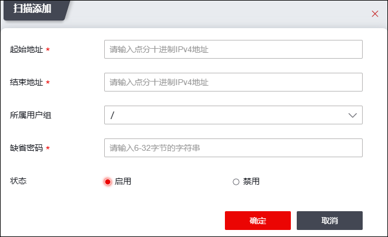
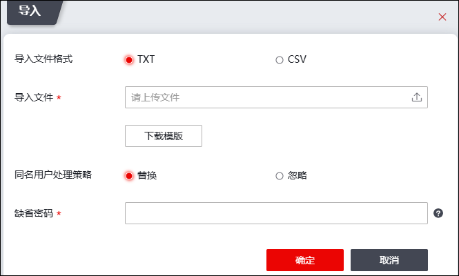

用户经过NGFW访问网络资源前，NGFW需要对其进行认证，认证通过之后，NGFW会进一步检查与该用户相关联的用户访问策略。用户访问策略通过后，对于门户认证用户，NGFW会根据访问控制规则进行授权；对于SSL VPN用户，NGFW会根据SSLVPN模块的ACL管理功能和防火墙的访问控制规则综合判断结果进行授权。
l添加用户方式
NGFW支持的添加用户方式如下：
1）手动逐条添加：管理员手工逐条添加用户，一次只能添加一个用户。
2）自动添加：NGFW通过扫描网络中指定IP地址范围内的用户，自动将其添加至NGFW中，此方式中添加的用户名通过计算机名标识。
3）导入用户：将用户信息按照模板写入TXT或CSV文件中，再将TXT或CSV文件导入到系统中。
4）外部认证服务器同步：开启外部认证服务器的“自动添加用户到本地”功能（请参见 认证服务器）。外部认证服务器与NGFW认证成功后，可将认证服务器中用户同步至NGFW中，另外，对于ldap认证服务器，还支持通过点击指定ldap认证服务器的“同步”图标实现将LDAP用户同步至NGFW中。
l用户认证方式
NGFW支持的添加用户方式如下：
1）门户认证：支持本地认证、外部认证。
2）SSLVPN认证：支持本地认证、外部认证。
在NGFW本地维护用户的具体操作如下：
| 步骤1 | 选择 。界面左侧为用户组管理界面，右侧为用户管理界面，整体界面如下图所示。 |

| 步骤2 | 添加用户。 |
Ø手工添加
1）点击用户管理界面的“添加”选择“手动添加”，弹出添加用户窗口，界面如下图所示。

在添加用户时，各项参数的具体说明如下表所示。
参数 |
说明 |
|
|---|---|---|
基本信息 |
用户名 |
必填项。设置用户的名称，支持汉字、字母、数字、-、_，不支持空格和特殊字符（!@#$%^&*(),/?;:’”），最多支持31个字节（一个汉字占三个字节；一个字母/数字占一个字节），区分大小写。 |
所属用户组 |
可选项。设置用户所属的用户组，默认属于根用户组“/”。 |
|
密码 |
必填项，输入用户的认证密码允许长度：6-32。 |
|
确认密码 |
必填项，再次输入用户的认证密码。允许长度：6-32。 |
|
邮箱 |
设置用户的邮箱。 |
|
认证方式 |
选择用户认证方式，包括单因子（密码/证书）、双因子（密码+短信、密码+证书/密码+Ukey），认证方式的选择限制取决于安全策略的配置，详情参见 用户管理 > 认证服务器 > 安全安全策略 > 认证方式。 1）证书认证方式，需选择已导入的本地证书进行绑定；如果绑定的证书未导入到设备中，点击【导入外部证书】后可导入。本地管理员证书的导入，参见 本地证书。 2）密码和证书认证方式，证书配置方法与单因子证书认证相同，登录认证需同时满足密码认证以及证书认证用户才可以上线。 3）密码和UKey认证方式，UKey是一种通过USB(通用串行总线接口)直接与计算机相连、具有密码验证功能，使用UKey前需要在对应的管理终端上安装相应的驱动程序，驱动安装成功后才可以识别出UKey。获取驱动请联系天融信销售人员。 4）密码+短信认证，在下方手机号配置项输入需要进行登录验证的手机号码。 |
|
状态 |
设置启用/禁用当前用户账户。 |
|
账号过期时间 |
设置用户的账号过期时间。勾选“过期时间”后，需要设置具体时间。 |
|
描述 |
可选项。设置用户的描述信息，最多支持255个字符。 |
|
用户访问策略 |
允许登录地址 |
设置允许用户登录的地址范围。用户登录的主机IP只能在设定范围内才能正常登录。默认不对用户使用的IP地址进行限制。 |
允许认证时间范围 |
设置允许用户认证的时间范围。用户只能在设定的时间范围内认证。默认不对用户的允许认证时间进行限制。 |
|
2）参数设置完成后，点击【确定】按钮即可完成用户的添加。
Ø自动添加用户
|
²自动添加的用户由主机名标识用户；如需对用户的网络行为进行控制，管理员后续还需对用户属性（如允许登录IP地址、允许认证时间、认证服务器等）进行修改，工作量较大且不易辨别，建议管理员尽量不采用该方式批量添加用户。 |

1）点击“添加”选择“扫描添加”，弹出窗口界面如下图所示。

各项参数的具体说明如下表所示。
参数 |
说明 |
|---|---|
起始地址 |
必填项，设置扫描用户的起始主机IP地址。 |
结束地址 |
必填项，设置扫描用户的结束主机IP地址。 |
所属用户组 |
设置NGFW自动扫描出的用户添加到哪个用户组中。 |
缺省密码 |
必填项，设置扫描用户的缺省密码。当扫描到的用户无密码时，该缺省密码将作为用户的默认密码。 |
用户状态 |
设置是否启用用户扫描。 |
2）参数设置完成后，点击【确定】按钮完成用户的添加。
Ø导入用户
1）点击“导入”，如下图所示。

各项参数的具体说明如下表所示。
参数 |
说明 |
|---|---|
选择导入格式 |
选择导入用户配置文件的格式。可选项为：TXT和CSV两种。 说明： 点击“下载格式模板”可以下载对应的TXT或CSV格式的模板。 |
选择导入文件 |
必选项，点击【浏览】按钮，在本地主机中选择待导入的文件。 |
同名用户处理策略 |
设置待导入用户与NGFW上已有用户同名时的处理方式，可选项：替换、忽略。 说明： 替换：导入同名用户时，导入的用户替换NGFW上已配置的用户。 忽略：导入同名用户时，保留NGFW上已配置用户，忽略本用户的导入。 |
缺省密码 |
必填项，设置导入用户的缺省密码。当导入用户无密码时，该缺省密码将作为用户的默认密码。 |
2）参数设置完成后，点击【确定】按钮即可完成用户导入。
| 步骤3 | 启用/禁用用户。 |
添加的用户默认状态为启用，勾选多个用户，点击“启用/禁用”可执行对应操作。